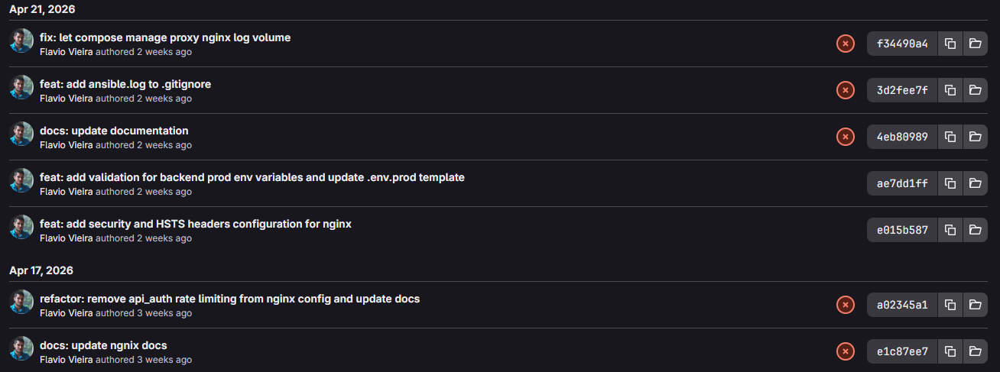
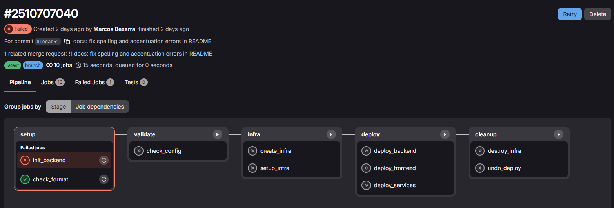
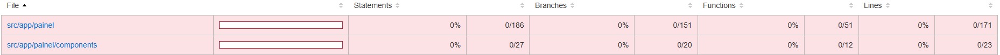
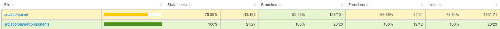
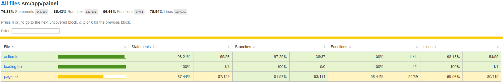
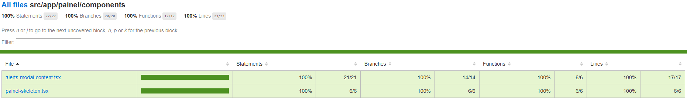
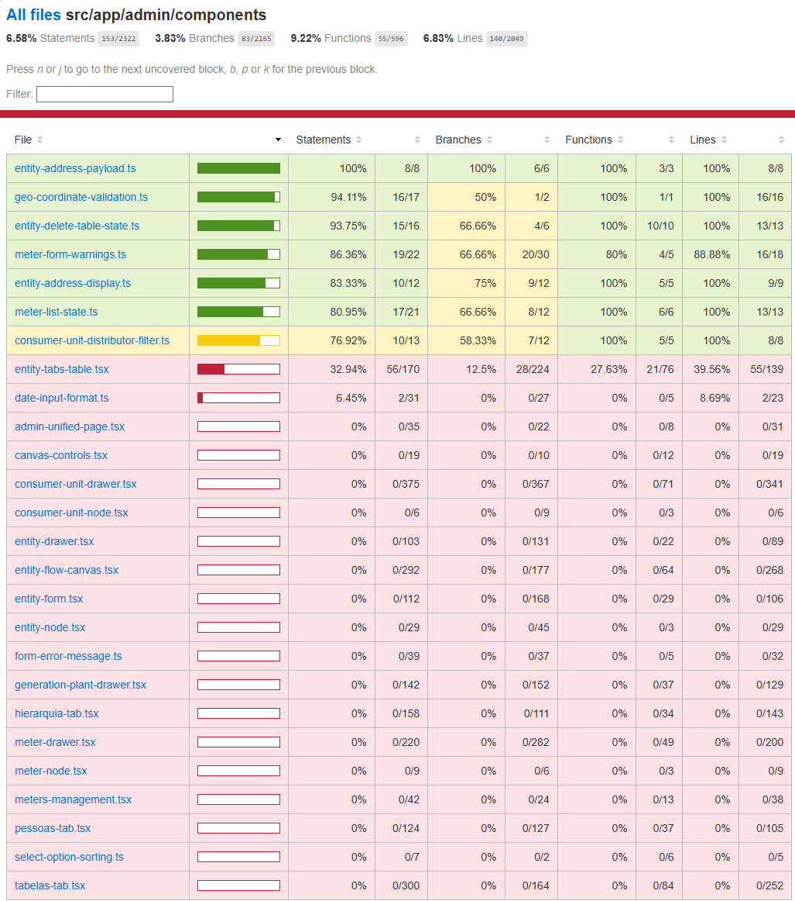
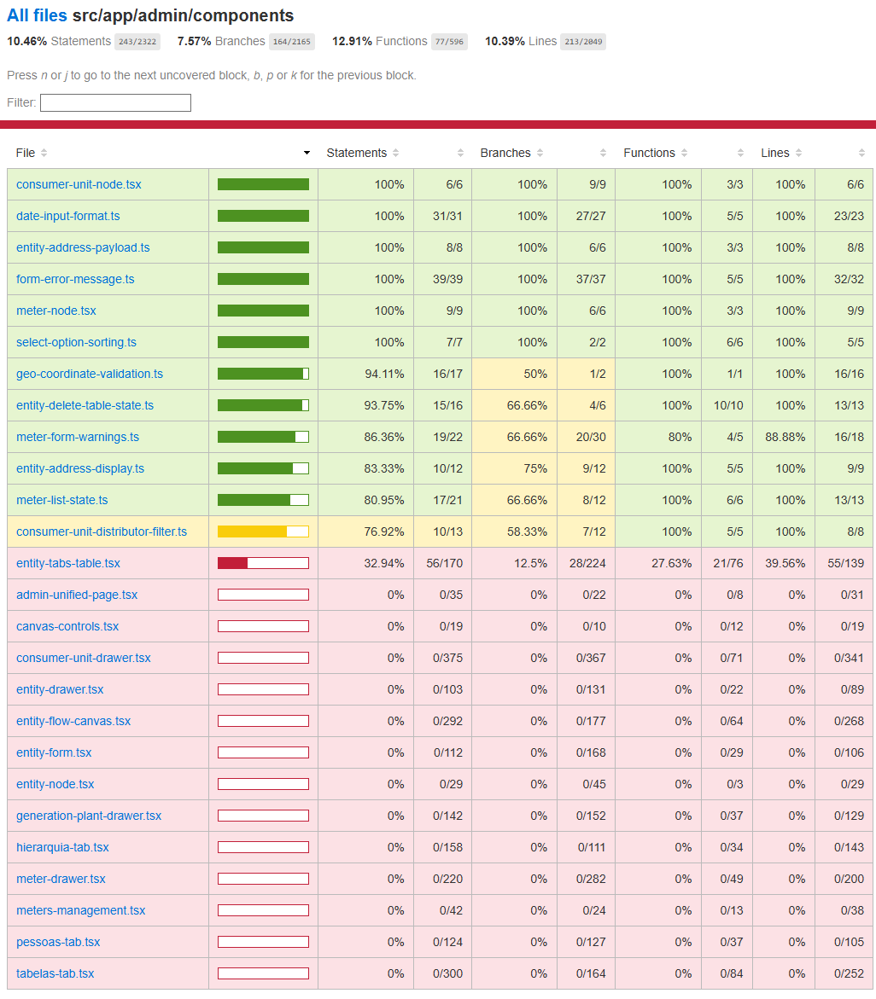

Diário de Bordo - Marcos Bezerra
Esta seção tem como objetivo registrar, ao longo das sprints, o acompanhamento individual das atividades realizadas por cada integrante do grupo.
A cada sprint, cada membro irá documentar sua experiência no projeto, descrevendo as tarefas realizadas, dificuldades encontradas, decisões tomadas e aprendizados adquiridos durante o processo de contribuição no MEPA. Além disso, o diário de bordo funciona como um histórico do desenvolvimento do projeto, tornando rastreável o processo de contribuição em um ambiente de software livre.
Sprint 0 - Documentação
Duração: 06/04/2026 - 22/04/2026
Resumo da Sprint
Nesta sprint, o foco principal foi preparar a base para as próximas contribuições no projeto MEPA. Além de conseguir subir o ambiente e compreender melhor a estrutura do repositório, também foi necessário iniciar a documentação do nosso próprio grupo, organizando o espaço onde serão registradas as sprints, atas e demais entregas da disciplina.
Atividades Realizadas
| Data | Atividade | Tipo | Referência | Status |
|---|---|---|---|---|
| 16/04 | Configuração do MkDocs no repositório do grupo | Código/Doc | GitHub | Concluído✅ |
| 16/04 | Criação da branch docs e organização da documentação |
Código/Doc | Branch Docs | Concluído✅ |
| 17/04 | Configuração de CD para build automático da documentação | Código | Código | Concluído✅ |
| 17/04 | Estudo da estrutura do repositório MEPA | Estudo | Repositório MEPA | Concluído✅ |
| 17/04 | Análise dos 3 repositórios do grupo MEPA no GitLab | Estudo | Repositório MEPA | Concluído✅ |
| 17/04 | Levantamento inicial de issues do projeto | Estudo | Repositório MEPA | Concluído✅ |
| 18/04 | Criação da página da Sprint 0 na documentação | Doc | Sprint 0 | Concluído✅ |
| 20/04 | Redação da ata da reunião 1 do grupo | Doc | Ata 1 | Concluído✅ |
Maiores Avanços
Consegui estruturar a base da documentação do grupo, deixando o MkDocs funcionando no repositório e com deploy automático configurado. Isso ajudou a organizar melhor o fluxo de trabalho da equipe e facilitou a construção das páginas que serão usadas ao longo da disciplina.
Além disso, o estudo inicial do repositório MEPA foi importante para entender como o projeto está dividido e como as partes do sistema se relacionam. Ao identificar que o projeto é separado em três repositórios principais, ficou mais claro onde cada tipo de contribuição pode acontecer e como o trabalho do grupo deve ser direcionado.
Também foi possível iniciar o levantamento de issues e entender melhor o perfil das tarefas disponíveis, o que será útil para definir contribuições mais adequadas nas próximas sprints.
Dificuldades
Uma das dificuldades dessa sprint foi na comunicação e entendimento da disciplina. Demorou um tempo para eu entender de fato do que de fato seria abordado na disciplina e o que era esperado na Sprint 0. Após estudar um pouco repositórios de grupos passados essa dúvida foi sanada
Outra questão foi o onboarding com o MEPA, houve um pouco de dificuldade para marcar a reunião devido as demandas da universidade e os horários disponíveis dos mantenedores.
Aprendizados
Durante essa sprint, aprendi mais sobre a estrutura de um projeto de software livre em um contexto real, principalmente sobre a divisão entre frontend, backend e infraestrutura. Também tive contato mais prático com a configuração do MkDocs e com a automação de deploy da documentação, o que ajudou bastante na organização do repositório do grupo.
Plano Pessoal para a Próxima Sprint
Na próxima sprint, pretendo começar a me aprofundar mais nas issues do MEPA para identificar possíveis contribuições mais simples e adequadas ao nosso nível de familiaridade com o projeto.
Sprint 1 - Primeira Contribuição
Duração: 27/04/2026 - 11/05/2026
Resumo da Sprint
Nesta sprint, realizei minha primeira contribuição efetiva ao projeto MEPA, focada em documentação. A tarefa consistiu em corrigir erros de ortografia e acentuação no README.md do repositório mepa-infra. Além disso, durante o processo de submissão da contribuição, identifiquei um problema consistente no pipeline de CI/CD relacionado à autenticação do Terraform com o backend remoto.
Devido ao alto volume de demandas e à agenda corrida dos mantenedores, não foi possível que eles preparassem issues específicas para nossa equipe(que seriam relacionadas a testes), conforme havia sido alinhado inicialmente. Diante disso, fomos orientados a buscar por issues simples, como por exemplo aquelas com ênfase na documentação do MEPA (web, api e infra). Foi nos dado um certo grau de liberdade para escolher como contribuir.
Atividades Realizadas
| Data | Atividade | Tipo | Referência | Status |
|---|---|---|---|---|
| 28/04 | Análise de issues disponíveis nos repositórios MEPA | Estudo | MEPA Infra | Concluído ✅ |
| 08/05 | Correção de erros de português no README do repositório fork mepa-infra |
Código/Doc | Commit | Concluído ✅ |
| 08/05 | Criação de branch docs/fix-readme e abertura de Merge Request |
Código/Doc | MR !1 | Concluído ✅ |
| 08/05 | Identificação e análise do erro de pipeline (Error loading state: HTTP remote state endpoint requires auth) |
Estudo | Pipeline #2510707040 | Concluído ✅ |
Maiores Avanços
- Primeira contribuição efetiva: Consegui abrir um Merge Request com correções reais no README do projeto.
- Identificação de problema estrutural: Ao tentar validar o pipeline, percebi que o job
init_backendfalha com erro de autenticação no estado remoto do Terraform. Esse erro não tem relação com minha alteração – ele ocorre em qualquer commit, incluindo a branchmaindo repositório original. Essa descoberta pode se transformar em uma issue futura de infraestrutura, com bom potencial de contribuição para as próximas sprints.

- Aprendizado sobre fluxo de MR: Como tenho mais familiaridade com o Github, nessa issue pude aprender melhor como funciona o fluxo no Gitlab com criação e exclusão de forks e abertura de Merge Requests.
Dificuldades
- Processo de exclusão e recriação do fork: Por engano, deletei meu fork para tentar resolver o problema do pipeline, o que gerou atraso (o fork ficou agendado para exclusão). Aprendi que é melhor restaurar o fork ao invés de deletá-lo.
Aprendizados
- Boas práticas de nomenclatura de branches: Pude aplicar o padrão
docs/fix-readmepara refletir o tipo de mudança, seguindo o padrão de boas práticas adotado amplamente por repositórios Open Source. A correta nomeação de branchs e commits pode facilitar o aceite de MRs em qualquer repositório. - Resiliência: Contribuir em um projeto ativo com mantenedores ocupados exige paciência e autonomia para investigar problemas não documentados.
Plano Pessoal para a Próxima Sprint
- Acompanhar o MR aberto: Verificar se os mantenedores irão revisar e aprovar a correção do README, respondendo a eventuais pedidos de alteração.
- Propor uma issue para corrigir o erro do Pipeline: Com base na análise feita, pretendo redigir uma issue detalhada no repositório
mepa-infrasugerindo a correção do pipelineinit-backend. - Buscar nova tarefa de documentação: Caso haja tempo, procurar outros arquivos com problemas semelhantes (acentuação, clareza) nos repositórios
mepa-webemepa-api.
Sprint 2 - Testes do Módulo Painel
Duração: 11/05/2026 - 25/05/2026
MR Aberto na Sprint: MR !79
Resumo da Sprint
Nesta sprint, participei da cobertura de testes do módulo Painel do MEPA-Web. O módulo estava com cobertura praticamente zero, especialmente nas actions (comunicação com a API) e nos componentes de interface que lidam com alertas, gráficos e favoritos. O objetivo foi garantir que as principais funcionalidades – exibição de métricas energéticas, modal de alertas, navegação entre entidades favoritas e loading states – estivessem protegidas contra regressões.
Atividades Realizadas
| Data | Atividade | Tipo | Referência | Status |
|---|---|---|---|---|
| 13/05 | Análise da cobertura atual do módulo Painel (Vitest UI) | Estudo | pnpm test:coverage src/app/painel |
Concluído ✅ |
| 15/05 | Implementação dos testes para action.ts (4 funções principais) |
Código | action.test.ts |
Concluído ✅ |
| 17/05 | Criação dos testes do componente alerts-modal-content.tsx |
Código | alerts-modal-content.test.tsx |
Concluído ✅ |
| 20/05 | Testes da página principal page.tsx (com mocks de hooks e componentes) |
Código | page.test.tsx |
Concluído ✅ |
| 22/05 | Testes dos skeletons (loading.tsx e painel-skeleton.tsx) |
Código | loading.test.tsx, painel-skeleton.test.tsx |
Concluído ✅ |
| 24/05 | Execução da suíte de testes e verificação da cobertura final | Validação | pnpm test:coverage src/app/painel |
Concluído ✅ |
| 25/05 | Documentação da sprint no diário de bordo e no sprint2.md da equipe |
Documentação | Issue #75 | Concluído ✅ |
Maiores Avanços
- Aumento expressivo da cobertura: O módulo Painel saltou de 0% para 76% de cobertura de linhas.
Evolução da Cobertura – Painel
Antes da Sprint 2:

Legenda: módulo Painel praticamente sem testes (0% de cobertura).
Depois da Sprint 2:



Aprendizados
- Estratégia de testes para páginas complexas: Aprendi a separar o que deve ser testado em unidade (actions, componentes puros) do que exige integração com mocks (páginas com hooks e roteamento).
- Importância de testar estados de carregamento e erro: Os skeletons e a mensagem de erro do
page.tsxsão fundamentais para a experiência do usuário; os testes garantiram que eles aparecem nos momentos certos. - Organização de mocks reutilizáveis: Criei um arquivo
__mocks__/next-navigation.tse o reutilizei em vários testes, o que economizou tempo e padronizou os mocks.
Plano Pessoal para a Próxima Sprint
- Investigar outras áreas com baixa cobertura,.
- Investigar mais afundo o problema no pipeline do MEPA-Infra
Sprint 3 - Testes do Módulo Admin/Components
Duração: 25/05/2026 - 08/06/2026
MR Aberto na Sprint: MR !85
Resumo da Sprint
Nesta sprint, concentrei os esforços no módulo src/app/admin/components, que apresentava muitas áreas com cobertura baixa ou nula, especialmente nos componentes de nós (consumer-unit-node, meter-node) e utilitários (date-input-format, form-error-message, select-option-sorting). Foram criados testes unitários para cinco arquivos, cobrindo desde formatação de datas e mensagens de erro até a renderização e interação dos componentes de interface.
Os testes garantem que os componentes se comportem corretamente tanto em cenários de sucesso quanto em casos extremos (dados nulos, propriedades opcionais, callbacks não definidos), aumentando a confiabilidade da área administrativa do sistema.
Atividades Realizadas
| Data | Atividade | Tipo | Referência | Status |
|---|---|---|---|---|
| 03/05 | Análise da cobertura atual do módulo admin/components |
Estudo | pnpm test:coverage src/app/admin/components |
Concluído ✅ |
| 05/06 | Criação da Issue 77 | Issue | Issue #77 | Concluído ✅ |
| 05/06 | Implementação dos testes para consumer-unit-node.tsx (renderização, badges, botão "Ver UC") |
Código | consumer-unit-node.test.tsx |
Concluído ✅ |
| 05/06 | Criação dos testes para date-input-format.ts (formatação e conversão entre formatos brasileiro e ISO) |
Código | date-input-format.test.ts |
Concluído ✅ |
| 05/06 | Testes para form-error-message.ts (mensagens de erro, fallbacks, campos aninhados) |
Código | form-error-message.test.ts |
Concluído ✅ |
| 05/06 | Implementação dos testes para meter-node.tsx (serial number, identificadores, badge de carga/gerador) |
Código | meter-node.test.tsx |
Concluído ✅ |
| 05/06 | Testes para select-option-sorting.ts (funções de ordenação e formatação de labels) |
Código | select-option-sorting.test.ts |
Concluído ✅ |
| 05/06 | Abertura do Merge Request com os cinco arquivos de teste | Código/Doc | MR !85 | Concluído ✅ |
| 05/06 | Execução da suíte completa e verificação da cobertura final | Validação | pnpm test:coverage |
Concluído ✅ |
| 05/06 | Atualizando a documentação | Documentação diário de bordo | marcos.md |
Concluído ✅ |
Maiores Avanços
Aumento significativo da cobertura no módulo admin/components: Os arquivos criados saltaram de 0% para 100% (ou próximo disso) de cobertura de linhas e funções. Abaixo a evolução antes e depois da sprint.
Evolução da Cobertura – Admin/Components
Antes da Sprint 3:

Legenda: vários arquivos do módulo com 0% de cobertura, inclusive consumer-unit-node.tsx, date-input-format.ts, form-error-message.ts, meter-node.tsx e select-option-sorting.ts.
Depois da Sprint 3:

Legenda: os cinco arquivos testados agora apresentam cobertura próxima de 100% de statements, branches, functions e lines.
Dificuldades
- Simulação do react‑flow: Os componentes
ConsumerUnitNodeeMeterNodedependem doHandleda bibliotecareactflow. Foi necessário criar um mock manual do módulo para que os testes de renderização não quebrassem. - Tratamento de erros aninhados no
form-error-message: A funçãogetFirstFormErrorMessagepercorre objetos de erro profundamente aninhados. Garantir a cobertura de todos os caminhos (arrays, objetos nulos, campos especiaisref,type,types) exigiu vários casos de borda.
Aprendizados
- Testes de utilitários de data: Aprendi a importância de testar todas as combinações de entrada (datas válidas, inválidas, parciais, com espaços, leap years) para evitar falhas silenciosas de conversão.
- Padrão de mock para componentes com dependências externas: Centralizei os mocks do
reactflowe dos helpers (meter-helpers,meter-display) em cada arquivo de teste, o que facilitou a manutenção e a leitura. - Organização de testes por contexto: Usei
describeaninhados para separar testes de renderização, distribuidor, interações, etc., deixando o código mais claro e os relatórios de falha mais específicos.
Plano Pessoal para a Próxima Sprint
- Acompanhar o MR aberto: Aguardar revisão dos mantenedores e realizar ajustes solicitados.
- Expandir cobertura para outros componentes do admin: Investigar arquivos como
entity-tabs-table.tsx,admin-unified-page.tsxeentity-flow-canvas.tsx, que ainda possuem baixa cobertura. Por conta da quantidade de arquivos acredito que seja bom ir trabalhando ao longo das próximas Sprints - Contribuir com a issue do pipeline do MEPA‑Infra: Retomar a análise do erro de autenticação do Terraform e tentar elaborar uma solução ou issue detalhada.
Sprint 4 - Admin/Components (Continuação)
Duração: 08/06/2026 - 22/06/2026
MR Aberto na Sprint: MR !85
Resumo da Sprint
Nesta sprint, dei continuidade à melhoria da cobertura de testes no módulo admin/components, focando especificamente nos componentes visuais de nós (nodes) integrados ao React Flow (consumer-unit-node.tsx e meter-node.tsx). O foco foi garantir a renderização correta de diferentes estados e dados atrelados aos nós da rede, além de testar detalhadamente as interações do usuário nesses elementos da interface gráfica.
Atividades Realizadas
| Data | Atividade | Tipo | Referência | Status |
|---|---|---|---|---|
| 21/06 | Implementação de testes para consumer-unit-node.tsx |
Código | consumer-unit-node.test.tsx |
Concluído ✅ |
| 21/06 | Implementação de testes para meter-node.tsx |
Código | meter-node.test.tsx |
Concluído ✅ |
| 21/06 | Mock de dependências externas (reactflow, lucide-react) |
Código | meter-node.test.tsx |
Concluído ✅ |
| 22/06 | Atualização do Diário de Bordo | Documentação | marcos.md |
Concluído ✅ |
Maiores Avanços
consumer-unit-node.tsx: Foram validados cenários de renderização do nome da UC, número (incluindo estados vazios ou nulos), status (Ativa/Inativa) e a correta exibição das siglas ou nomes das distribuidoras. Além disso, garantiu-se que o botão "Ver UC" dispare o callbackonViewcorretamente e evite a propagação do evento de clique para o nó pai.meter-node.tsx: A cobertura garantiu a verificação do conteúdo principal (número de série e identificadores iterados), formatação do contexto, exibição correta dos badges ("Carga" vs "Gerador") e dos rótulos de tipo e modelo do medidor. Assim como no componente da UC, o callbackonViewe a interrupção da propagação de eventos no botão "Ver Medidor" foram rigorosamente testados em múltiplos cenários.
Aprendizados
- Testes de Interação e Delegação de Eventos: Compreendi na prática a importância de testar explicitamente se o
stopPropagationestá operando conforme esperado. Isso assegura que cliques em botões internos de um nó não disparem acidentalmente interações na área de manipulação do React Flow. - Criação de Factories de Props para Testes: O desenvolvimento de funções construtoras auxiliares como a
makeNodePropsdemonstrou ser uma excelente prática. Elas instanciam os objetos complexos exigidos pelos testes, facilitando a substituição rápida de propriedades para simular fluxos de borda (ex: chaves não definidas ou campos de distribuidora nulos).
Plano Pessoal para a Próxima Sprint
- Acompanhar a revisão do Merge Request atualizado e realizar os ajustes sugeridos pelos mantenedores.
- Continuar mapeando componentes críticos da área de
adminque ainda possuem baixa cobertura. - Revisitar sobre as falhas no pipeline do repositório MEPA-Infra e Web para eventualmente documentar uma issue de correção mais estruturada.
Histórico de Versão
| Data | Versão | Descrição | Autor |
|---|---|---|---|
| 20/04/2026 | 1.0.0 | Versão inicial - Sprint 0 | Marcos Bezerra |
| 10/05/2026 | 1.1.0 | Sprint 1 | Marcos Bezerra |
| 25/05/2026 | 1.2.0 | Sprint 2 | Marcos Bezerra |
| 05/06/2026 | 1.3.0 | Sprint 3 | Marcos Bezerra |
| 22/06/2026 | 1.4.0 | Sprint 4 | Marcos Bezerra |